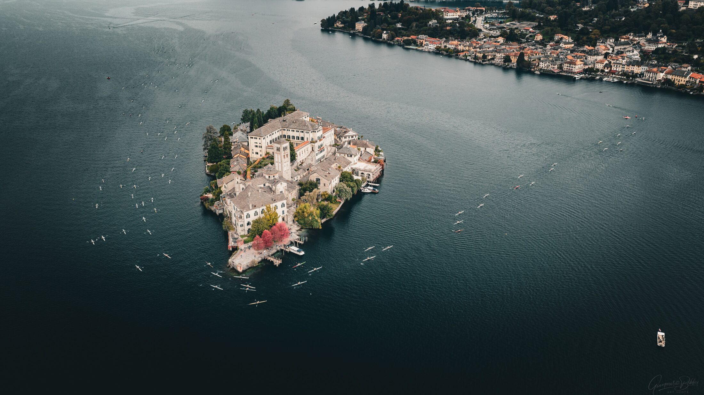

Trekking, bikepacking, spedizioni outdoor: progettati nei minimi dettagli. Mai lasciati al caso.
Ogni percorso nasce da una progettazione attenta del territorio.
Non parto da una destinazione: parto da come vuoi viverla.
Ogni spedizione ha un perché, prima ancora di avere un itinerario.
Trascina il globo, zoomalo, tocca una rotta: ogni tratta ti porta al viaggio. Ogni percorso parte da Lago d'Orta, l'origine del progetto.

C'è un lago che conosco da sempre, e un giorno ho iniziato a guardarlo diversamente: non più solo un posto dove sono cresciuto, ma il punto da cui si può partire per capire un territorio, prima di attraversarne altri. Da lì è nata l'idea di progettare viaggi come si progetta qualcosa a cui si tiene davvero — con cura, con tempo, senza fretta di riempire un itinerario. Oechslin Outdoor è questo: il tentativo di trattare ogni spedizione come merita, partendo da un rapporto vero con i luoghi, non da un catalogo.
Sono cresciuto sul Lago d'Orta, e da lì è partita gran parte di quello che mi ha portato a costruire questo progetto — comprese le uscite come consigliere in un team di canottaggio locale, che mi hanno insegnato a leggere un territorio con calma, prima ancora di attraversarlo.
Il Cammino di Santiago è stata l'esperienza che ha cambiato il modo in cui penso un viaggio: da qualcosa da consumare velocemente, a qualcosa da progettare con attenzione. Oechslin Outdoor nasce da questo percorso — non un'agenzia che vende pacchetti, ma un modo di costruire spedizioni che parte da una conoscenza reale dei luoghi.